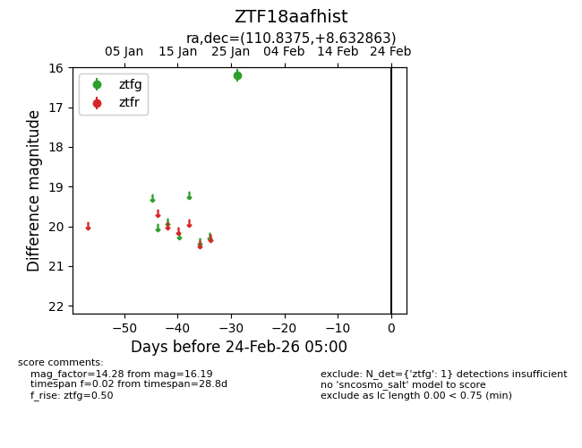
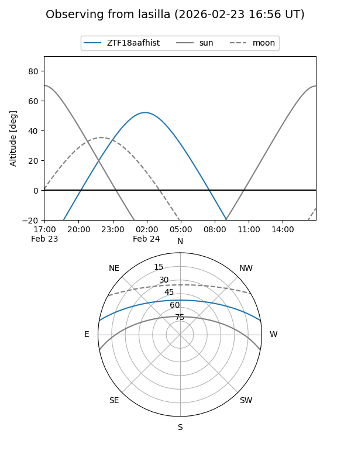
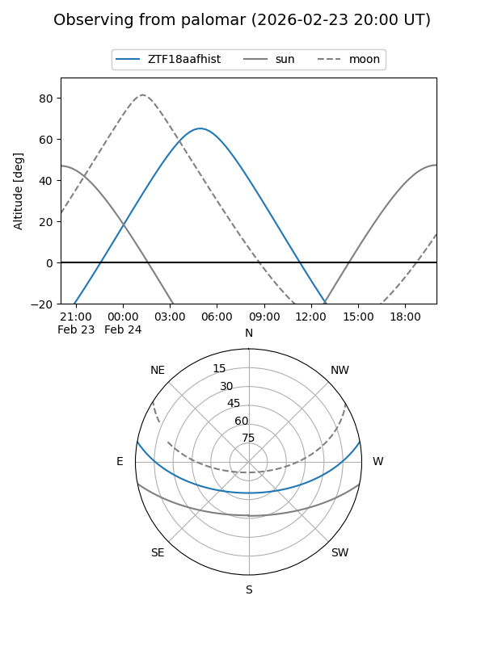

ZTF18aafhist
Target ZTF18aafhist at 2026-01-28 11:21
Aliases and brokers:
FINK: link
Lasair: link
ALeRCE: link
alt names
ZTF18aafhist (ztf,fink_ztf)
Coordinates:
equatorial (ra, dec) = 110.8375,+8.63286
equatorial (HMS+DMS) = 07:23:21.00,+08:37:58.31
galactic (l, b) = (208.7833,+10.98602)
Flags:
Photometry:
last ztfg=16.19
1 ztfg detections
Lightcurve

Visibility


Additional plots